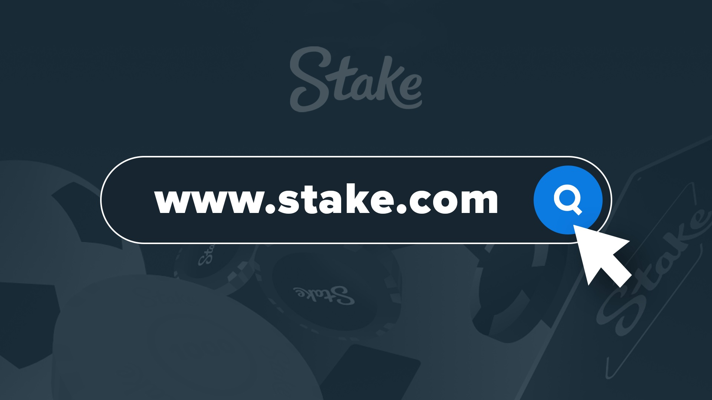

Stake.com 에 등록
가입하기Stake.com 에 가입하는 것은 빠르고 쉽습니다. 시작하려면 단계별 가이드를 따르세요. 다음에 대한 자세한 내용을 읽으십시오.
스테이크 등록
Stake.com 은 국제 도박 사이트입니다. 그것의 스포츠북과 온라인 카지노는 소수의 국가만 제한되어 있는 전 세계의 플레이어를 받아들입니다.
이 회사는 퀴라소 정부에서 발급한 국제 운영자 라이선스를 보유하고 있습니다. 또한 영국 플레이어의 경우 Stake UK는 도박 위원회에서 허가 및 규제를 받습니다.
이 베팅 회사에 가입하고 싶다면 Stake.com 등록 가이드에서 계정 설정 방법을 설명합니다.
Stake.com - 한눈에 보기
| Stake.com 세부 | |
|---|---|
| ⚽ 제품 | 경기 전 및 라이브 스포츠 베팅, esports, 카지노, 라이브 카지노 |
| 💰 웰컴 보너스 | $500까지 200% |
| 💎 프로모션 코드 | KOREA1234 |
| ✅ 라이센스 | 앤틸레폰(퀴라소) |
| 📅 설립 | 2017년 |
| Crypto 화폐 결제 수단 | BTC, ETH, XRP, DOGE, TRX 외 15개 |
| 💱 현지 통화 예금 | 문페이를 통해 |
| 🌍 언어 | 영어, 독일어, 일본어, 포르투갈어, 스페인어, 프랑스어, 인도네시아어, 한국어, 핀란드어, 러시아어, 힌디어, 중국어 |
| ☎️ 실시간 지원 | 예, 연중무휴 |
| 📺 라이브 스트리밍 | 야구, 축구, 아이스하키, 농구 및 기타 여러 스포츠 |
Stake.com 에 등록하는 방법
Stake.com 방문
Stake 웹 사이트를 방문하려면 이 페이지의 링크를 클릭하십시오. 일부 국가에서는 공식 사이트에 액세스할 수 없습니다. 따라서 ISP가 닷컴 도메인을 차단하는 경우 mirror 사이트 중 하나를 사용하는 것이 좋습니다.

가입하기
웹 사이트에서 등록 또는 즉시 등록 버튼(데스크톱 보기)을 클릭합니다. 또는 Facebook, Google, LINE 또는 Twitch 계정을 통해 Stake.com 에 등록할 수 있습니다.

등록 양식 작성
가입 양식에 이메일 주소를 입력합니다. 또한 사용자 이름과 비밀번호를 만들고 생년월일을 입력해야 합니다.
Stake 프로모션 코드를 입력하십시오
코드라고 표시된 상자에 프로모션 코드 KOREA1234를 입력합니다. 그런 다음 지금 플레이 버튼을 누르기 전에 이용 약관에 동의했음을 나타내는 확인란을 클릭합니다.

계정 생성됨
Stake 계정이 생성되는 데 몇 초밖에 걸리지 않습니다. 이제 첫 입금을 하고 환영 보너스를 청구할 준비가 되었습니다.

추가 참고 사항으로 플레이어는 12시간 이내에 이메일 주소를 확인해야 합니다. 등록할 때 Stake 가 보내는 이메일의 링크를 클릭하기만 하면 됩니다. 이 작업을 완료하면 모든 기능에 액세스할 수 있습니다. 그런 다음 첫 입금을 진행하십시오.
- 지갑 아이콘을 클릭합니다.
- 목록에서 원하는 통화를 선택하라는 메시지가 표시됩니다. 원하는 경우 나중에 편집할 수 있습니다.
- Bitcoin (BTC)과 같은 cryptocurrencies 중 하나를 선택합니다.
- 지갑 주소를 보려면 클릭하십시오.
- 개인 BTC 지갑을 열고 Stake Bitcoin 지갑에 자금을 입금하십시오.
스테이크 로그인
Stake 계정이 처음 생성되면 로그인됩니다. 계정의 보안을 강화하므로 즉시 2FA를 설정하는 것이 좋습니다.
2단계 인증 설정
- 화면 상단에 있는 사람 아이콘을 클릭하여 시작합니다.
- 드롭다운 메뉴에서 설정과 보안을 차례로 선택합니다.
- 아래로 스크롤하여 2단계 인증 활성화를 찾습니다.
- 키 코드를 가져와 Google Authenticator 앱에 붙여넣습니다.
- 그런 다음 앱의 6자리 암호를 Stake 계정에 입력합니다.
이제 Stake 에 로그인할 때 이메일/사용자 이름과 비밀번호를 제공해야 합니다. 그런 다음 2FA 코드를 입력하라는 메시지가 표시됩니다.
스테이크 웰컴 보너스
Stake.com 에 새 계정을 등록하는 동안 프로모션 코드 KOREA1234를 사용하여 독점적인 환영 보너스를 청구하십시오. 현재 제안은 최대 $500 상당의 200% 매칭 입금 보너스입니다.
플레이어는 스포츠 베팅 및 카지노 게임에 보너스 자금을 사용할 수 있습니다. 물론 베팅 요구 사항 및 시간 제약과 같이 준수해야 하는 몇 가지 이용 약관이 있습니다.
Stake.com 프로모션 코드 KOREA1234는 모든 플랫폼에서 작동하므로 모든 장치에서 가입하고 이 보너스를 활용할 수 있습니다.
Stake.com 기능
많은 도박 사이트가 다르다고 주장하지만 거의 그렇지 않습니다. Stake 는 몇 안되는 예외 중 하나입니다. 이것은 암호화폐 카지노 및 스포츠북 그 이상입니다. 중심 초점은 온라인 도박이지만 Stake 는 커뮤니티와 공생에 관한 것입니다.
스포츠북
25개 이상의 스포츠에 베팅할 수 있습니다. EPL 축구에서 NBA 농구에 이르기까지 전 세계의 액션이 있습니다. 또한 고객은 현금 인출, 라이브 스트리밍 및 베팅 빌더와 같은 최고의 기능에 액세스할 수 있습니다.
Stake.com 카지노
완벽한 게임 경험을 제공합니다. 열정적인 플레이어는 2,500개 이상의 게임을 즐길 수 있습니다. Pragmatic Play, Big Time Gaming 및 Spinomenal과 같은 최고 개발자의 슬롯이 있습니다.
또는 입증할 수 있는 공정한 Stake Originals 중 하나를 플레이하거나 테이블 게임 선택을 확인할 수 있습니다. 라이브 딜러 카지노에는 크랩, baccarat, 식보, blackjack, 룰렛 테이블이 있습니다. Monopoly Big Baller, Sweet Bonanza Candyland 및 Crazy Time을 포함한 다양한 게임 쇼도 있습니다.
암호화폐 결제
암호화폐 카지노로서 플레이어는 Bitcoin, Ethereum 및 XRP와 같은 선호하는 디지털 자산을 사용하여 안전하고 안전한 지불을 할 수 있습니다. 그러나 cryptocurrencies를 소유하지 않은 경우 Google Pay, Visa 또는 Mastercard를 사용하여 플랫폼에서 구매할 수 있습니다.
풍부한 카지노 및 스포츠 프로모션, 활발한 온라인 커뮤니티, 24시간 지원을 통해 Stake 가 세계에서 가장 빠르게 성장하는 도박 사이트 중 하나인 이유를 쉽게 알 수 있습니다.
스테이크 등록 - FAQ
영국의 Stake.com 에 등록할 수 있습니까?
Stake 는 이제 영국의 플레이어가 사용할 수 있지만 국제 웹사이트가 아닌 영국 관련 웹사이트에 등록해야 합니다. 영국에 있는 경우 브라우저가 사용자의 위치를 식별하고 올바른 웹사이트로 안내합니다.
Stake.com 에 어떻게 등록합니까?
이 페이지의 링크를 사용하면 해당 국가의 Stake 로 연결됩니다. 그런 다음 '등록'을 클릭하여 계정을 만드십시오. 또는 Google, Facebook, LINE 또는 Twitch 계정을 통해 가입할 수 있습니다.
Stake.com 보너스 코드는 무엇입니까?
새 계정을 등록할 때 Stake.com 보너스 코드 KOREA1234를 사용할 수 있습니다. 이렇게 하면 최대 $500 상당의 200% 매칭 입금 보너스를 받을 수 있습니다.
모바일에서 Stake.com 프로모션 코드를 사용할 수 있나요?
예, 모바일 사용자는 등록 과정에서 Stake.com 프로모션 코드 KOREA1234를 적용할 수 있습니다. 스마트폰, 태블릿, 노트북, PC에서 작동합니다.